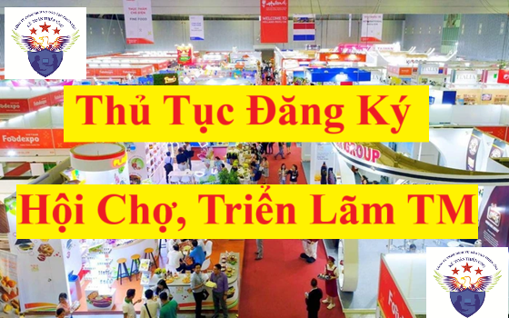

Hướng dẫn thực hiện tủ tục đăng ký tổ chức, tham gia hội chợ, triển lãm thương mại theo mẫu biểu hồ sơ mới nhất năm 2025 tại Nghị định 128/2024/NĐ-CP sửa đổi, bổ sung Nghị định 81/2018/NĐ-CP
1. Nghĩa vụ của thương nhân tổ chức, tham gia hội chợ, triển lãm thương mại
Theo điều 28 của Nghị định 81/2018/NĐ-CP thì:
1.1. Nghĩa vụ của thương nhân tổ chức hội chợ, triển lãm thương mại
1.1. Nghĩa vụ của thương nhân tổ chức hội chợ, triển lãm thương mại
a) Đăng ký tổ chức hội chợ, triển lãm thương mại với cơ quan quản lý nhà nước có thẩm quyền;
b) Có trách nhiệm giải quyết khiếu nại, phản ánh của người tiêu dùng hoặc tổ chức, cá nhân về hội chợ, triển lãm thương mại; về hàng hóa trưng bày tại hội chợ, triển lãm thương mại;
c) Cung cấp đến thương nhân tham gia đầy đủ, chính xác thông tin liên quan đến việc tham gia hội chợ, triển lãm thương mại, các hoạt động trong khuôn khổ hội chợ, triển lãm thương mại ngoài hoạt động trưng bày hàng hóa;
d) Các nghĩa vụ khác theo quy định tại Điều 139, Điều 140 Luật thương mại.
1.2. Nghĩa vụ của thương nhân, tổ chức, cá nhân tham gia hội chợ, triển lãm thương mại (tham gia trưng bày tại hội chợ, triển lãm thương mại)
a) Chịu trách nhiệm hoàn toàn về hàng hóa, dịch vụ được trưng bày tại hội chợ, triển lãm thương mại;
b) Cung cấp đầy đủ, chính xác thông tin về hàng hóa trưng bày cho đơn vị tổ chức hội chợ, triển lãm thương mại và chịu trách nhiệm về thông tin cung cấp;
c) Các nghĩa vụ khác theo quy định tại Điều 138, Điều 139 Luật thương mại.
2. Đăng ký tổ chức hội chợ, triển lãm thương mại
Theo điều 28 của Nghị định 81/2018/NĐ-CP được sửa đổi bổ sung tại Nghị định 128/2024/NĐ-CP thì:
Thương nhân tổ chức hội chợ, triển lãm thương mại tại Việt Nam (không bao gồm các hoạt động hội chợ, triển lãm thương mại trong khuôn khổ các chương trình, hoạt động xúc tiến thương mại do Thủ tướng Chính phủ, Ủy ban nhân dân cấp tỉnh quyết định) hoặc tổ chức cho thương nhân, tổ chức, cá nhân tham gia hội chợ, triển lãm thương mại tại nước ngoài (không bao gồm các hoạt động hội chợ, triển lãm thương mại trong khuôn khổ các chương trình, hoạt động xúc tiến thương mại do Thủ tướng Chính phủ quyết định) phải thực hiện thủ tục hành chính đăng ký tổ chức hội chợ, triển lãm thương mại tại cơ quan quản lý nhà nước có thẩm quyền.
Trong đó: Cơ quan quản lý nhà nước có thẩm quyền nêu trên bao gồm:
+ Sở Công Thương nơi tổ chức đối với hội chợ, triển lãm thương mại tại Việt Nam;
+ Bộ Công Thương đối với hội chợ, triển lãm thương mại tại nước ngoài.
Cách thức đăng ký tổ chức hội chợ, triển lãm thương mại:
Thương nhân được lựa chọn một trong các cách thức đăng ký sau:
+ Nộp 01 hồ sơ đăng ký qua dịch vụ bưu chính đến cơ quan quản lý nhà nước có thẩm quyền;
+ Nộp 01 hồ sơ đăng ký trực tiếp tại trụ sở cơ quan quản lý nhà nước có thẩm quyền;
+ Sử dụng hệ thống dịch vụ công trực tuyến do cơ quan quản lý nhà nước có thẩm quyền cung cấp.
Thời hạn đăng ký (căn cứ theo ngày nhận ghi trên vận đơn dịch vụ bưu chính hoặc các hình thức có giá trị tương đương trong trường hợp gửi qua dịch vụ bưu chính, căn cứ theo ngày ghi trên giấy tiếp nhận hồ sơ trong trường hợp nộp trực tiếp hoặc căn cứ theo ngày ghi nhận trên hệ thống trong trường hợp nộp qua hệ thống dịch vụ công trực tuyến):
+ Tối đa (sớm nhất) 365 ngày và tối thiểu (chậm nhất) 30 ngày trước ngày khai mạc đối với hội chợ, triển lãm thương mại tại Việt Nam;
+ Tối đa (sớm nhất) 365 ngày và tối thiểu (chậm nhất) 45 ngày trước ngày khai mạc đối với hội chợ, triển lãm thương mại tại nước ngoài.
3. Hồ sơ đăng ký tổ chức hội chợ, triển lãm thương mại bao gồm:
01 Đăng ký tổ chức hội chợ, triển lãm thương mại theo Mẫu số 10 Phụ lục ban hành kèm theo Nghị định 128/2024/NĐ-CP;
Chi tiết Mẫu số 10 được ban hàng kèm theo Nghị định 128/2024/NĐ-CP thì các bạn xem tại đây:
Mẫu đăng ký tổ chức hội chợ, triển lãm thương mại
4. Nội dung đăng ký tổ chức hội chợ, triển lãm thương mại, bao gồm:
+ Tên, địa chỉ của thương nhân, tổ chức hoạt động có liên quan đến thương mại tổ chức hội chợ, triển lãm thương mại;

+ Tên, chủ đề hội chợ, triển lãm thương mại (nếu có);
+ Thời gian, địa điểm tổ chức hội chợ, triển lãm thương mại;
+ Quy mô dự kiến của hội chợ, triển lãm thương mại;
+ Việc tổ chức trưng bày hàng giả, hàng vi phạm quyền sở hữu trí tuệ; việc tổ chức cấp giải thưởng, chứng nhận chất lượng, danh hiệu của hàng hóa, dịch vụ, chứng nhận uy tín, danh hiệu của thương nhân, tổ chức hoặc cá nhân tham gia hội chợ, triển lãm thương mại; việc tổ chức hội chợ, triển lãm thương mại với danh nghĩa của tỉnh, thành phố
5. Cơ quan quản lý nhà nước có thẩm quyền trả lời xác nhận hoặc không xác nhận bằng văn bản việc đăng ký tổ chức hội chợ, triển lãm thương mại trong vòng 07 ngày làm việc kể từ ngày nhận được đầy đủ hồ sơ. Trong trường hợp không xác nhận thì cơ quan quản lý nhà nước có thẩm quyền phải nêu rõ lý do. Nội dung xác nhận hoặc không xác nhận thực hiện theo Mẫu số 11 hoặc Mẫu số 12 Phụ lục ban hành kèm theo Nghị định này.
6. Trường hợp có từ hai thương nhân, tổ chức hoạt động có liên quan đến thương mại trở lên đăng ký tổ chức hội chợ, triển lãm thương mại trùng tên, chủ đề, thời gian, địa bàn, cơ quan quản lý nhà nước có thẩm quyền tổ chức hiệp thương để lựa chọn thương nhân, tổ chức hoạt động có liên quan đến thương mại được tổ chức hội chợ, triển lãm thương mại đó.
Trường hợp việc hiệp thương không đạt kết quả, cơ quan quản lý nhà nước có thẩm quyền quyết định xác nhận đăng ký cho một thương nhân hoặc tổ chức hoạt động có liên quan đến thương mại được tổ chức hội chợ, triển lãm thương mại căn cứ vào các cơ sở sau đây:
+ Kết quả tổ chức hội chợ, triển lãm thương mại tương tự đã thực hiện;
+ Năng lực tổ chức hội chợ, triển lãm thương mại;
+ Kinh nghiệm tổ chức hội chợ, triển lãm thương mại cùng tên, cùng chủ đề hoặc các hội chợ, triển lãm thương mại tương tự;
+ Đánh giá của các hiệp hội ngành hàng liên quan.
7. Trong vòng 30 ngày kể từ ngày kết thúc hội chợ, triển lãm thương mại, thương nhân, tổ chức hoạt động có liên quan đến thương mại phải có văn bản theo Mẫu số 14 Phụ lục ban hành kèm theo Nghị định này báo cáo cơ quan quản lý nhà nước về kết quả việc tổ chức hội chợ, triển lãm thương mại theo những nội dung đã đăng ký và được xác nhận.
Chi tiết Mẫu số 14 được ban hàng kèm theo Nghị định 128/2024/NĐ-CP thì các bạn xem tại đây:
Mẫu báo cáo kết quả tổ chức hội chợ, triển lãm thương mại
Mẫu báo cáo kết quả tổ chức hội chợ, triển lãm thương mại
8. Hội chợ, triển lãm thương mại tổ chức tại Việt Nam phải đảm bảo đáp ứng các yêu cầu sau:
+ Hàng hóa tại hội chợ, triển lãm thương mại phải được trưng bày, giới thiệu trong các gian hàng tiêu chuẩn (kích thước 3mx3m) hoặc khu vực tương đương với nhiều gian hàng tiêu chuẩn;
+ Có đầy đủ các dịch vụ phục vụ gồm: Điện, nước, an ninh, vệ sinh.
9. Đăng ký sửa đổi, bổ sung nội dung tổ chức hội chợ, triển lãm thương mại
+ Trường hợp sửa đổi, bổ sung nội dung tổ chức hội chợ, triển lãm thương mại đã đăng ký, thương nhân, tổ chức hoạt động có liên quan đến thương mại phải thực hiện thủ tục hành chính đăng ký sửa đổi, bổ sung nội dung tổ chức hội chợ, triển lãm thương mại. Hồ sơ đăng ký sửa đổi, bổ sung nội dung tổ chức hội chợ, triển lãm thương mại phải gửi đến cơ quan quản lý nhà nước có thẩm quyền chậm nhất 30 ngày trước ngày khai mạc hội chợ, triển lãm thương mại. Hồ sơ đăng ký sửa đổi, bổ sung thực hiện theo Mẫu số 13 Phụ lục ban hành kèm theo Nghị định này.
+ Thương nhân được lựa chọn một trong các cách thức đăng ký sửa đổi, bổ sung sau:
a) Nộp 01 hồ sơ đăng ký qua dịch vụ bưu chính đến cơ quan quản lý nhà nước có thẩm quyền;
b) Nộp 01 hồ sơ đăng ký trực tiếp tại trụ sở cơ quan quản lý nhà nước có thẩm quyền;
c) Sử dụng hệ thống dịch vụ công trực tuyến do cơ quan quản lý nhà nước có thẩm quyền cung cấp.
+ Cơ quan quản lý nhà nước có thẩm quyền xác nhận hoặc không xác nhận bằng văn bản việc đăng ký sửa đổi, bổ sung nội dung tổ chức hội chợ, triển lãm thương mại trong vòng 07 ngày làm việc kể từ ngày nhận được đầy đủ hồ sơ. Trong trường hợp không xác nhận thì cơ quan quản lý nhà nước có thẩm quyền phải nêu rõ lý do.
+ Việc sửa đổi, bổ sung nội dung tổ chức hội chợ, triển lãm thương mại phải đảm bảo không ảnh hưởng đến quyền lợi của các thương nhân, tổ chức, cá nhân có liên quan.
10. Chấm dứt hoạt động hội chợ, triển lãm thương mại
+ Thương nhân tổ chức hội chợ, triển lãm thương mại có nghĩa vụ chấm dứt việc thực hiện toàn bộ hoặc một phần hội chợ, triển lãm thương mại nếu bị cơ quan quản lý nhà nước yêu cầu. Việc yêu cầu thương nhân chấm dứt hoạt động hội chợ, triển lãm thương mại chỉ được thực hiện khi cơ quan quản lý nhà nước phát hiện thương nhân có hành vi vi phạm các quy định tại Khoản 2, Khoản 3 Điều 131, Khoản 3 Điều 133, Điều 134, Điều 135, Điều 136, Điều 137 Luật Thương mại.
+ Việc chấm dứt thực hiện hoạt động hội chợ, triển lãm thương mại phải được thương nhân tổ chức hội chợ, triển lãm thương mại công bố công khai và phải đảm bảo quyền lợi của các thương nhân đã tham gia hội chợ, triển lãm thương mại đó.
11. Một vài các quy định khác về HÀNG HÓA, DỊCH VỤ TRƯNG BÀY, GIỚI THIỆU TẠI HỘI CHỢ, TRIỂN LÃM THƯƠNG MẠI mà bạn có thể muốn biết:
11.1. Ghi nhãn hàng hóa đối với hàng hóa trưng bày, giới thiệu tại hội chợ, triển lãm thương mại tại Việt Nam.
+ Hàng hóa trưng bày, giới thiệu tại hội chợ, triển lãm thương mại tại Việt Nam phải có nhãn hàng hóa theo quy định của pháp luật về ghi nhãn hàng hóa.
+ Hàng hóa tạm nhập khẩu để trưng bày, giới thiệu tại hội chợ, triển lãm thương mại tại Việt Nam phải thực hiện theo quy định của pháp luật về ghi nhãn hàng hóa.
Theo Điều 23 của Nghị định 81/2018/NĐ-CP
11.2. Trưng bày hàng giả, hàng xâm phạm quyền sở hữu trí tuệ để so sánh với hàng thật
+ Việc tổ chức trưng bày hàng giả, hàng xâm phạm quyền sở hữu trí tuệ tại hội chợ, triển lãm thương mại phải được nêu rõ trong nội dung đăng ký khi thương nhân thực hiện các thủ tục hành chính đăng ký hoặc đăng ký sửa đổi, bổ sung nội dung tổ chức hội chợ, triển lãm thương mại.
+ Hàng giả, hàng xâm phạm quyền sở hữu trí tuệ khi được trưng bày phải niêm yết rõ hàng hóa đó là hàng giả, hàng xâm phạm quyền sở hữu trí tuệ.
Theo Điều 24 của Nghị định 81/2018/NĐ-CP
11.3. Sử dụng tên, chủ đề của hội chợ, triển lãm thương mại
+ Thương nhân, tổ chức hoạt động có liên quan đến thương mại khi tổ chức hội chợ, triển lãm thương mại có quyền chọn tên, chủ đề hội chợ, triển lãm thương mại không trái pháp luật, trái với đạo đức, phong tục, tập quán, thuần phong, mỹ tục của Việt Nam.
+ Trường hợp tên, chủ đề của hội chợ, triển lãm thương mại sử dụng những từ ngữ để quảng bá chất lượng, danh hiệu của hàng hóa, dịch vụ hoặc uy tín, danh hiệu của thương nhân, tổ chức, cá nhân tham gia hội chợ triển lãm thương mại thì thương nhân, tổ chức hoạt động có liên quan đến thương mại khi tổ chức hội chợ, triển lãm thương mại phải tuân thủ các quy định sau đây:
+/ Có bằng chứng chứng minh chất lượng, danh hiệu của hàng hóa, dịch vụ tham gia hội chợ, triển lãm thương mại phù hợp với tên, chủ đề của hội chợ, triển lãm thương mại đã đăng ký;
+/ Có bằng chứng chứng minh uy tín, danh hiệu của thương nhân, tổ chức hoặc cá nhân tham gia hội chợ, triển lãm thương mại phù hợp với tên, chủ đề của hội chợ, triển lãm thương mại đã đăng ký.
Theo Điều 25 của Nghị định 81/2018/NĐ-CP
11.4. Cấp giải thưởng, chứng nhận chất lượng, danh hiệu của hàng hóa, dịch vụ, chứng nhận uy tín, danh hiệu của thương nhân, tổ chức hoặc cá nhân tham gia hội chợ, triển lãm thương mại
+ Việc tổ chức cấp giải thưởng, chứng nhận chất lượng, danh hiệu của hàng hóa, dịch vụ, chứng nhận uy tín, danh hiệu của thương nhân, tổ chức hoặc cá nhân tham gia hội chợ, triển lãm thương mại (tổ chức cấp giải thưởng) phải được thực hiện theo quy định của pháp luật có liên quan và phải được nêu rõ trong nội dung đăng ký khi thương nhân tổ chức hội chợ, triển lãm thương mại thực hiện các thủ tục hành chính đăng ký hoặc đăng ký sửa đổi, bổ sung nội dung tổ chức hội chợ, triển lãm thương mại.
+ Việc tổ chức cấp giải thưởng, chứng nhận chất lượng, danh hiệu của hàng hóa, dịch vụ, chứng nhận uy tín, danh hiệu của thương nhân, tổ chức hoặc cá nhân tham gia hội chợ, triển lãm thương mại phải đảm bảo tuân thủ các quy định của pháp luật có liên quan và các nguyên tắc sau:
+/ Chỉ được tổ chức cấp giải thưởng cho các thương nhân, tổ chức, cá nhân có đăng ký tham gia việc cấp giải thưởng trong hội chợ, triển lãm thương mại;
+/ Không phân biệt đối xử giữa các loại hình doanh nghiệp;
+/ Đảm bảo công khai, khách quan, công bằng trên cơ sở tự nguyện của thương nhân, tổ chức hoặc cá nhân tham gia hội chợ;
+/ Tên giải thưởng, danh hiệu phải bao gồm tên hội chợ, triển lãm thương mại mà thương nhân, tổ chức, cá nhân tham gia và không trái pháp luật, trái với đạo đức, phong tục, tập quán, thuần phong, mỹ tục của Việt Nam;
+/ Không huy động kinh phí dưới mọi hình thức đối với các thương nhân, tổ chức, cá nhân đăng ký tham gia cấp giải thưởng;
+/ Không lợi dụng việc cấp giải thưởng và các giải thưởng để có hành vi vi phạm pháp luật;
+/ Không ép buộc thương nhân, tổ chức, cá nhân đăng ký tham gia cấp giải thưởng.
Theo Điều 26 của Nghị định 81/2018/NĐ-CP
11.5. Tạm nhập tái xuất hàng hóa, dịch vụ tham gia hội chợ, triển lãm thương mại tại Việt Nam; tạm xuất tái nhập hàng hóa, dịch vụ tham gia hội chợ, triển lãm thương mại ở nước ngoài
Việc tạm nhập tái xuất hàng hóa tham gia hội chợ, triển lãm thương mại tại Việt Nam; tạm xuất tái nhập hàng hóa, dịch vụ tham gia hội chợ, triển lãm thương mại ở nước ngoài phải tuân thủ các quy định của pháp luật về hải quan và các quy định khác của pháp luật có liên quan.
Theo Điều 27 của Nghị định 81/2018/NĐ-CP